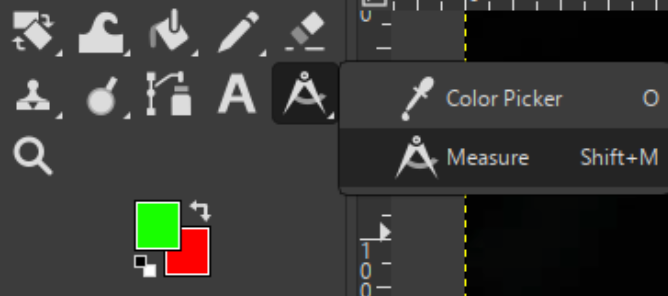
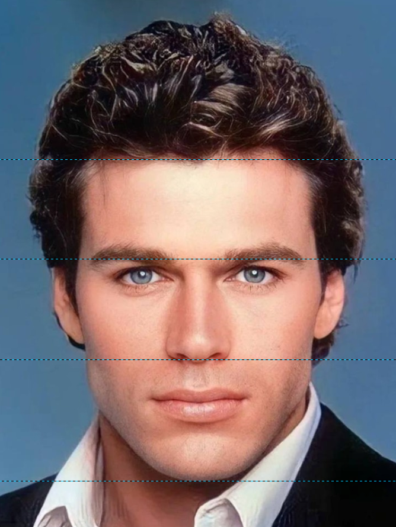
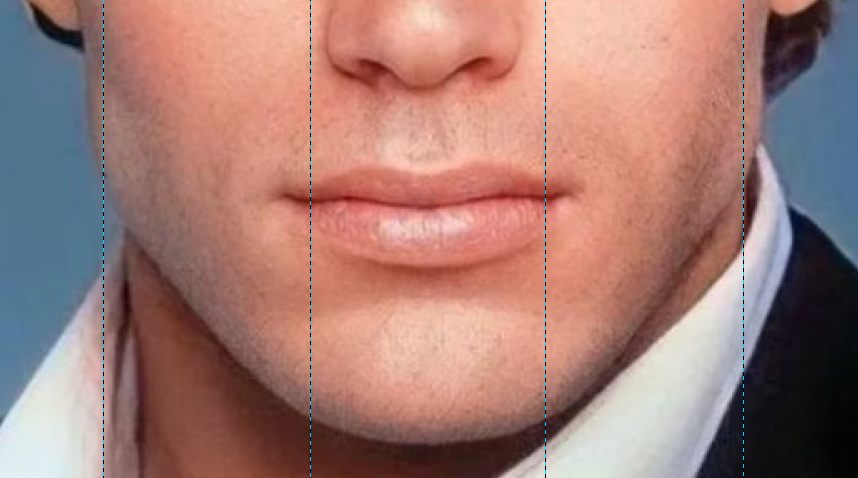
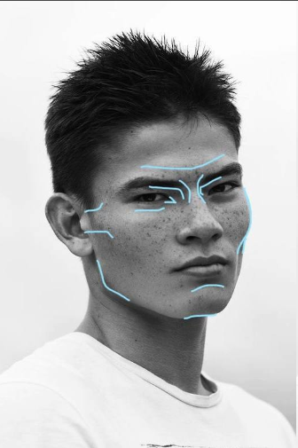
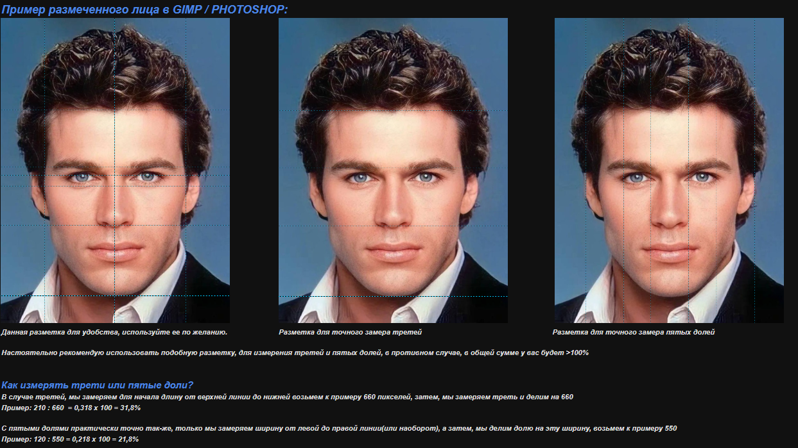

Трети лица
Измерь общую длину лица от верхней линии до нижней, затем — нужную треть. Раздели длину трети на общую длину лица.
Пример: 210 ÷ 660 = 0,318; 0,318 × 100 = 31,8%.
Это справочные ориентиры, а не дополнительные оцениваемые пункты.
Это справочные ориентиры, а не дополнительные оцениваемые пункты.
Оценки автоматически берутся из других вкладок. Чтобы изменить оценку, просто введи число в поле — оно сохранится, даже если изменятся остальные оценки. Расчёты выполняются без промежуточного округления. Если взвешенное отклонение составляет 0,5 балла или больше, из результата вычитается штраф, равный половине отклонения.
60% гармонии · 19,2% общего балла
40% гармонии · 12,8% общего балла
26% общего балла
22% общего балла
20% общего балла
Выбери программу или сначала посмотри схемы, чтобы понять, между какими точками измерять.
Потому что это довольно неточный инструмент. Автоматический анализ может неверно определить ключевые точки лица из-за ракурса, перспективных искажений камеры, освещения или мимики. Даже небольшая ошибка в положении точки заметно влияет на итоговые пропорции и баллы.
Поэтому замеры здесь выполняются вручную: так проще проверить каждую точку и исправить неточность. Для более надёжного результата используйте фото без искажений и внимательно следуйте схемам во вкладке «Как измерять».
Измерь общую длину лица от верхней линии до нижней, затем — нужную треть. Раздели длину трети на общую длину лица.
Пример: 210 ÷ 660 = 0,318; 0,318 × 100 = 31,8%.
Измерь общую ширину лица от левой линии до правой, затем — нужную долю. Раздели ширину доли на общую ширину лица.
Пример: 120 ÷ 550 = 0,218; 0,218 × 100 = 21,8%.
Для замеров с процентным значением умножай результат на 100.
Можно и без умножения на 100: 180 ÷ 210 = 0,857 (85,7%).
Здесь показаны примеры того, как делать замеры.
Красную линию делите на зелёную.
Для измерений понадобится GIMP — бесплатный редактор изображений.
Загрузи снимок в GIMP. Выбери чёткое фото без сильного наклона и перспективных искажений; для анфаса лицо должно смотреть прямо, для профиля — быть снято сбоку.
Нажми Shift + M или выбери инструмент «Измерение» на панели.
Зажми левую кнопку мыши в первой точке и протяни до второй. GIMP покажет длину в пикселях. Для пропорции раздели одно расстояние на другое; чтобы получить проценты, умножь результат на 100.

Линейка и панель «Инфо» помогут измерить расстояния в пикселях.
Выбери чёткий снимок без наклона и сильной перспективы. Лицо должно быть прямо для анфаса или снято сбоку для профиля.
На панели инструментов найди «Линейка» (Ruler Tool). Обычно она находится в группе с инструментом «Пипетка»; если значок не виден, зажми его для открытия группы.
Зажми левую кнопку мыши на первой точке и протяни до второй. Для горизонтальных или вертикальных отрезков удерживай Shift, если нужно выровнять линию.
Открой окно «Инфо» через меню «Окно» → «Инфо» и считай длину в параметрах линейки. Используй пиксели для пропорций: раздели одно расстояние на другое; для процентов умножь на 100.
Мобильное приложение для измерений прямо на фотографии.
Открой снимок лица в ImageMeter и увеличь нужную область для более точной разметки точек.
Выбери инструмент линейного измерения и поставь начало и конец отрезка на нужных точках лица.
Для относительных параметров измерь оба расстояния на одном снимке и раздели одно значение на другое.
В ImageMeter нет возможности установить разметку лица — например, сетку третей или пятых долей. Поэтому точки для замера придётся определять самостоятельно или сверяться со схемами во вкладке «Разметка», из-за чего результаты могут быть не совсем точными.
Камера должна быть примерно на уровне глаз или чуть выше. Избегай широкоугольных селфи вблизи, наклона головы, фильтров и сильной ретуши.
Если при съёмке профиля голова немного наклонена вверх, поверни фотографию так, чтобы лицо стояло ровно. Но если видна вторая бровь, а возможно, и вторая ресница, фотография сделана неправильно и для замеров профиля не подходит.
Сначала найди ориентиры на схеме, затем отмечай эти точки на фото. Не измеряй приблизительно по краю тени или волосам, если нужен контур кости.
Для пропорций достаточно отношения пиксельных расстояний на одном снимке. Реальный физический размер без масштаба и известного эталона получить нельзя.
Повтори измерение и сравни значения. Длину измеряй в пикселях, а углы — угломером или инструментом измерения угла; не подменяй одно другим.
Четыре отдельных примера разметки: для удобства, замера лицевых третей, пятых долей и челюстных третей.
Базовая сетка для ориентирования.

Разметка для точного замера лицевых третей.
Разметка для точного замера пятых долей лица.

Штраф учитывает, насколько оценки гармонии, особенностей, угловатости и диморфизма отличаются от общего взвешенного результата. Чем сильнее дисбаланс между категориями, тем больше корректировка итогового балла.
Оценки: гармония — 10, особенности — 10, угловатость — 10, диморфизм — 0.
Например, при отклонении 3,20 (выше порога 0,5) штраф составляет 1,60 балла.
Категория определяется по итоговому баллу и выбранной градации пола.
Adam: 9.00–9.99
True Adam: 10.00
Eve: 9.00–9.99
True Eve: 10.00
Угловатость лица относится к степени выраженности резких, чётко очерченных углов, которые формируются костями и мягкими тканями лица.
К этому относятся:
Угловатые лица, как правило, имеют меньше мягкотканного покрытия, что делает подлежащую костную структуру более заметной и придаёт лицу «скульптурный» вид.
Массивность лица относится к степени выраженности костной массы в лице, особенно в аспекте прочности и структурной плотности.
К характерным признакам относятся:
Оценка угловатости лица может быть сложной и довольно произвольной для перевода в числовое значение.
Однако, обладая острым зрением, мы можем создать целостный ориентир, основанный на нескольких факторах, таких как:

Оригинальная таблица и материалы, на которых основан сайт.

По разным вопросам и для получения анализа напишите мне в Telegram.
Данные могут быть неактуальными.